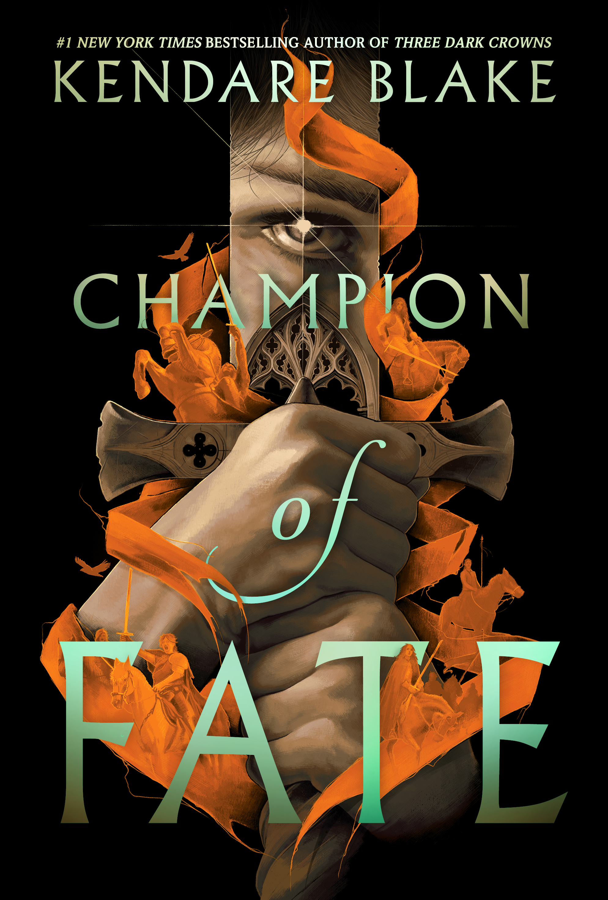

Champion of Fate

˗ˏˋ ★ ★ ★ ˎˊ˗
I really liked this book and the world it is set in. I loved the character of Reed and the order of the Aristene was so good. I thought the story was written quite well and the plot was really interesting.
I loved the character of Reed and how she was so determined throughout this whole book. I loved reading about her adventures and I really liked her character
I loved Hestion's character and the way he is stubborn and strong-willed like Reed. They complement each other quite well and I enjoyed reading about them.
I liked the moral dilemmas that Reed was going through and how she slowly realised that she did not agree with all the Aristene values.
I liked seeing the growing bond of Reed and Hestion as they were great together and their scenes were amazing.
When we found out that Reed was really bringing Hestion to death I was shocked. I felt so bad for her when it was revealed that every hero she led would die in glory. It was such a betrayal by Aristene and I was so mad for her.
I was even more shocked when she gave the sword to Hestion's brother instead of Hestion. I understood why she did it and I understand why Hestion was mad.
The ending was very good and I thoroughly enjoyed the whole book. The pacing was a bit slow at times but the plot was quite good. I enjoyed all the twists and betrayals. I recommend this book for anyone who wants a fantasy book that isn't a whole story.
Write a Review